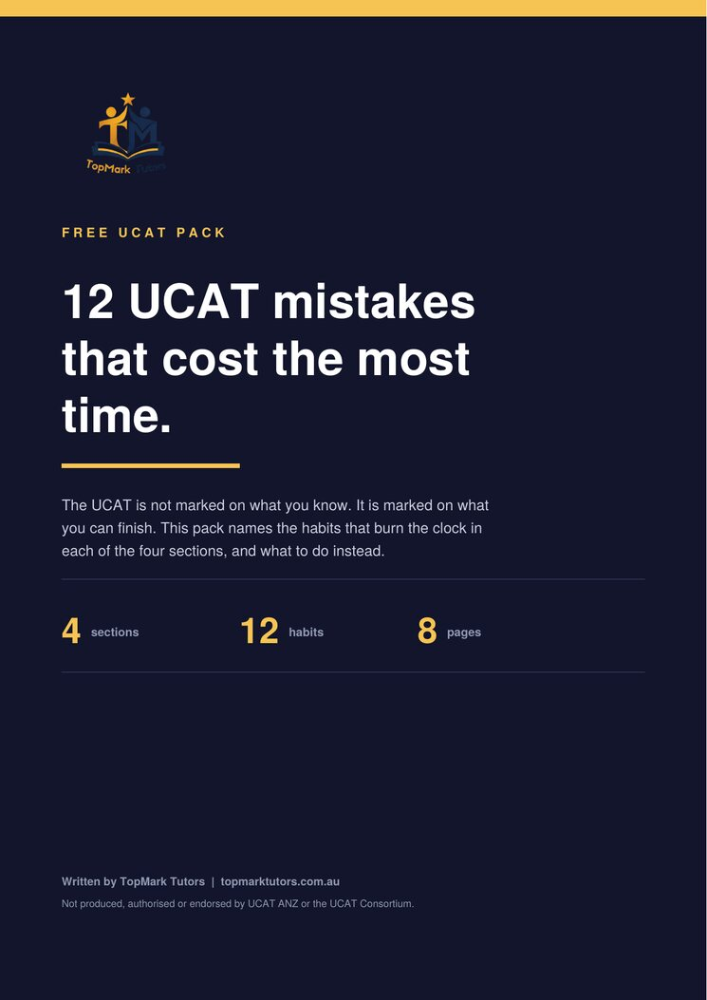
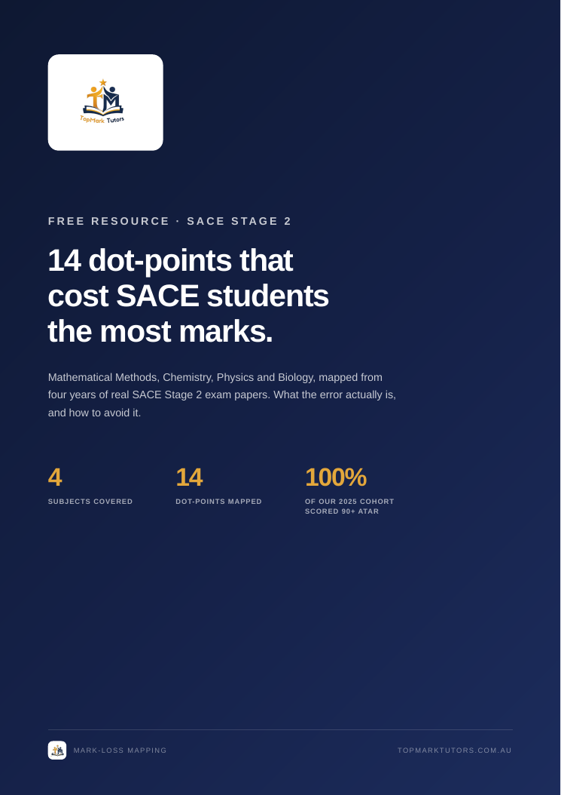

99.80ATAR
Ethan Zhao
Glenunga International High School
Chemistry A+ · 19.7Physics A+ · 19.7
Live online classes with Haseef. Timed practice in every session, and every practice test marked with a breakdown of where your time and marks went.
Free Medicine and Dentistry workshop, Saturday 14 November, 11am AEDT.
Adelaide tutoring • SACE support • UCAT preparation
Beyond the Crash Course, TopMark Tutors helps students build the skills, confidence and learning habits they need to perform better in school, assessments and exams all year round.
Student results · Class of 2025
Real ATAR results from our 2025 SACE cohort, including three subject Merits and seventeen A/A+ grades across Physics, Chemistry and Mathematical Methods.
Top performers
Glenunga International High School
Marryatville High School
Adelaide Botanic High School
Norwood International High School
Adelaide High School
Unley High School
Brighton Secondary School
Golden Grove High School
More 2025 results
Subject grades are SACE results with scaled scores out of 20. Names and schools have been changed at our students' request.
Programs
Whether a student needs weekly support, complete subject structure or guidance beyond academics, TopMark Tutors has a pathway that fits.
One-on-one tutoring built entirely around one student: their subjects, their gaps, their pace and their goals.
Structured group classes built on TopMark textbooks, with a weekly one-on-one session to catch up and ask questions.
A personal mentor for goals, accountability, study skills, confidence and direction, with parents kept in the loop.

Free resource • UCAT
The UCAT is not marked on what you know. It is marked on what you can finish. Verbal Reasoning gives you 44 questions in 22 minutes and Situational Judgement gives you 69 in 26, so the students who run out of time are rarely the ones who understood least.
Twelve habits, three in each section, that burn the clock without feeling wasteful at the time: reading the passage before the question, drawing the whole diagram, doing the arithmetic by hand, answering Situational Judgement as yourself. Each one comes with what to do instead, and each section ends with a drill you can run on your next practice set.
Every free workshop registrant gets this pack. Register for the workshop or download it here.
Your UCAT pack is on the way. Check your inbox. The workshop link follows closer to 14 November.
Download the Pack (PDF)
Free resource • SACE Stage 2
We went through four years of real SACE Stage 2 papers in Mathematical Methods, Chemistry, Physics and Biology, and mapped every question back to the exact dot-point it tested. The same handful of points show up year after year as the place students lose marks they should have kept.
The guide names all fourteen: what the dot-point is, what the error actually looks like, and how to fix it before it costs you marks in November. We call it Mark-Loss Mapping, and it is the same method the Crash Course is built on.
This is one of ten free resources. See the full library, including revision checklists for all four subjects and a full Chemistry practice exam.
Your guide is ready. A copy is on its way to your inbox as well.
Download the Guide (PDF)Live online with Haseef, starting Saturday 5 December 2026. Two class types each week: a lecture class where the content is taught, and a small-group workshop class where you work questions under the clock. Take either on its own, or both.
Your first class is free. Lecture classes teach the content in depth; workshop classes work questions under timed conditions in a small group, then review them together. Both in the same week is $75. Enrolments close Monday 30 November 2026, 11:59pm AEDT.
Reviews
Real reviews from TopMark students. Names have been changed for privacy.
“Ahmed has been an amazing biology tutor. He explains every topic by breaking it down into simple, easy-to-understand steps, which has made even the hardest concepts much clearer. Thanks to his teaching, I’ve improved to an A+ in Biology. I highly recommend him to anyone looking for a knowledgeable and supportive tutor.”
Zara W.Year 12 Biology student“Ali at Top Mark Tutors was an amazing tutor for my Chemistry and Mathematical Methods. He adapted every lesson to the way I learn, explained difficult concepts in a simple way, and always made sure I fully understood everything before moving on. He’s patient, knowledgeable, and genuinely cares about helping his students do well. My confidence and understanding improved so much thanks to him.”
Sienna M.Chemistry & Maths Methods student“I started tutoring with TopMark after struggling with Physics in first term, and it made an instant difference. My tutor explained things clearly, was patient, and helped me build back my confidence. My grades improved a lot by the end of term, and he also helped me out with Chemistry and Maths Methods along the way. Would recommend to anyone looking for a good tutor.”
Liam K.Physics, Chemistry & Methods student“Ali is an amazing tutor who explains even the hardest concepts in a way that actually makes sense. Instead of just teaching you how to answer a question, he makes sure you understand the reasoning behind it. No matter how many questions I ask, he always takes the time to explain everything clearly until I’m confident. Since starting with Ali, I’ve noticed a real improvement in both my understanding and my results.”
Noah P.Physics, Chemistry & Methods student“Top Mark Tutors have really helped me in not only grades but also consistency and confidence. After just a few weeks of tutoring, I noticed a significant improvement in not just my grades but also my work ethic. They not only taught me what to study, but also taught me how to study. Whether your goal is a high ATAR, UCAT, or just to improve your studies, I highly recommend Top Mark Tutors.”
Grace L.SACE studentStart with clarity
Use Calendly to book directly, or send an enquiry if you are not sure what support you need.